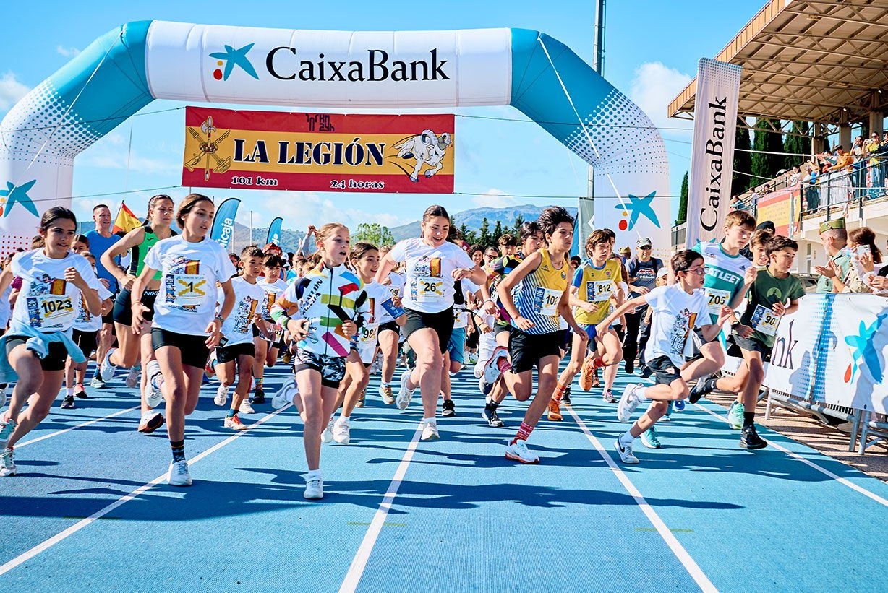

DERNIÈRE ACTIVITÉ CARITATIVE
DE M. ARACIL EN EUROPE
« Vous voulez repousser vos limites ? »
Rejoignez un ancien du Tercio Duque de Alba II
de la Légion espagnole pour un entraînement authentique
de callisthénie et de randonnée militaires.
LEGIONARIO ARACIL
Lieu : Salle de sport « Les Amoureux » — Nîmes
Adresse : 39 Rue des Amoureux, 30000 Nîmes
Planning de la semaine
Deux formats alternent : callisthénie en salle (1 heure) et randonnée militaire (2h à 2h30).
LundiCallisthénie
17h – 18h
MardiRandonnée militaire
17h – 19h30
MercrediCallisthénie
17h – 18h
JeudiRandonnée militaire
17h – 19h30
VendrediCallisthénie
17h – 18h
Week-end
SamediRandonnée militaire
7h30 – 9h30
DimancheCallisthénie
7h30 – 8h30
Les deux formats
- Callisthénie — 1 heure. En salle : pompes, abdos, triceps, barre fixe.
- Randonnée militaire — 2h à 2h30. Sac de 5 kg obligatoire ; 7 à 10 kg recommandés.

Débutants
Pas encore le niveau pour suivre le groupe ? Un circuit débutants existe. Vous y progressez à votre rythme avant de rejoindre l'entraînement complet.


À Prévoir
- 🎒 Sac de combat 5 kg — obligatoire (7 à 10 kg recommandés pour la randonnée)
- 📋 Copie de votre carte Vitale
- 👕 Tenue de sport et eau

Règles
- 📵 Pas de selfies, pas de photos
- 🤫 Pas de paroles pendant l'effort
- 🥇 Discipline et esprit légionnaire
Places Illimitées

Hermandad Nacional Antiguos Caballeros Legionarios
EL ESPÍRITU DE MARCHA: Jamás un hombre dirá que está cansado hasta caer reventado. Será el cuerpo más veloz y resistente.